Progress · Bro
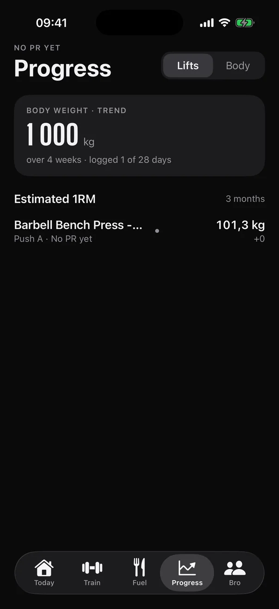
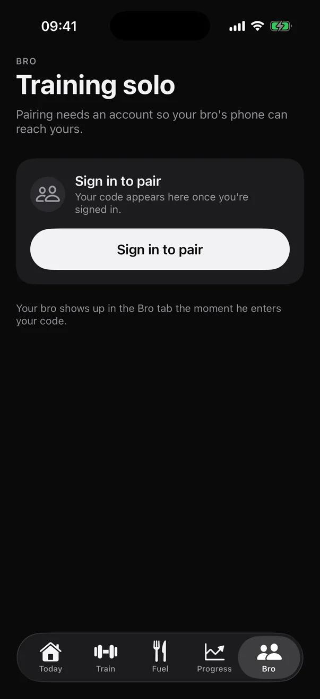
1Screens go empty
With little data, Progress is one row over a black void, and the Bro tab is a sign-in box. Nothing on the screen says what to do to fill it.
The current app is tidy, but most screens are grey numbers in lists, whole screens sit empty until there's data, and the partner feature the app is built around lives in the fifth tab. This proposal keeps the ember-on-black identity and the iOS 26 glass. It gives each screen one clear job, draws the data instead of listing it, and puts your bro on every screen.
Six problems, each visible in the shipped iOS 26 build. None of them is about taste. They're about where the eye lands and what the screen tells you to do next.


With little data, Progress is one row over a black void, and the Bro tab is a sign-in box. Nothing on the screen says what to do to fill it.
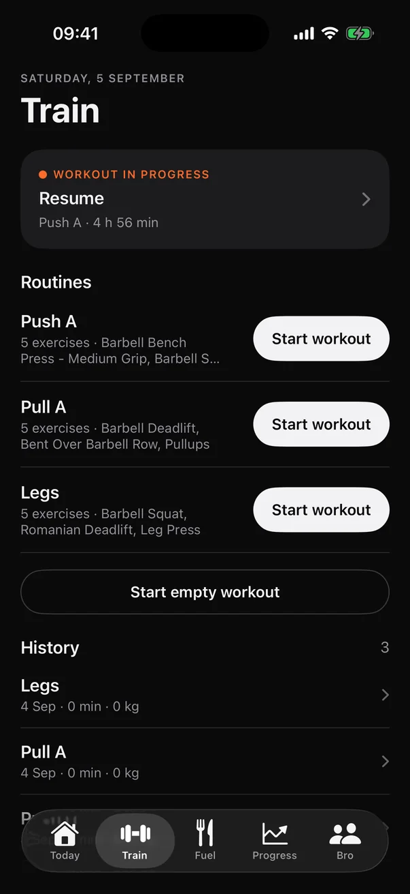
Three identical white “Start workout” pills plus an outlined fourth. The one routine you're scheduled for today looks exactly like the ones you aren't.
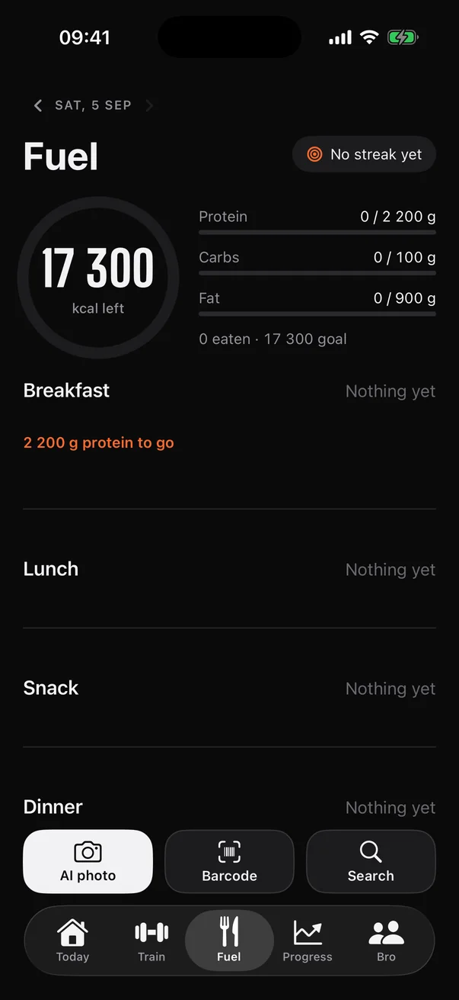
Macros are three grey hairlines, the kcal ring has no colour, and Progress has no chart on its home screen. You read numbers instead of seeing trends.
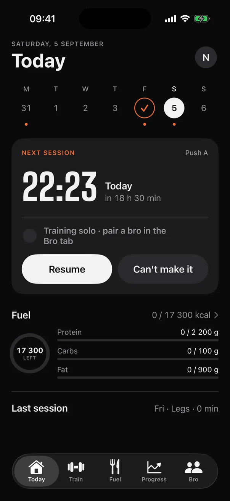
The reason the app exists, keeping each other honest, is a grey sentence on Today and the fifth tab. The week strip only shows you, never both of you.
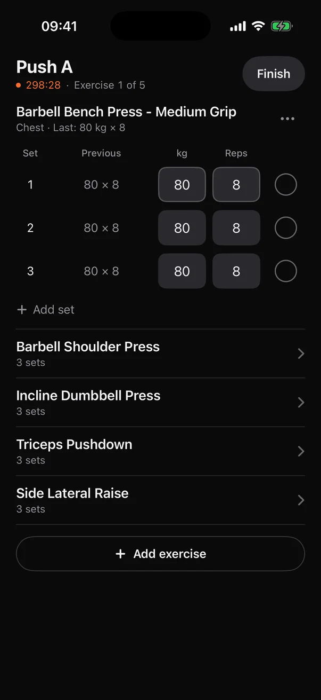
No sense of progress through the session, a small state change when a set is done, and no hint of what to lift today beyond “previous”.
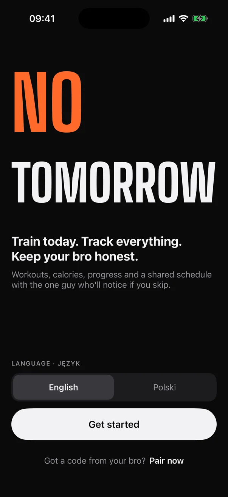
The welcome screen is loud and confident. Past it, Big Shoulders only shows up for a couple of hero numbers and ember is used sparingly, so the app reads as generic dark iOS.
The “current” screenshots are the repo's own iOS 26 simulator captures (design/parity/ios), taken with test data, which explains values like 17 300 kcal. The critique is about layout and hierarchy, not the numbers. The two other directions in design/ (stock iOS blue, brutalist yellow) were already explored and set aside; this builds on the chosen one.
No new brand, no new navigation. The same five tabs, fonts and ember, used with more intent.
Each tab lifts exactly one object on an ember-lit card: the next session on Today, today's routine on Train, the day's ring on Fuel, your lift on Progress, the shared scoreboard on Bro. Everything else steps back to plain surfaces.
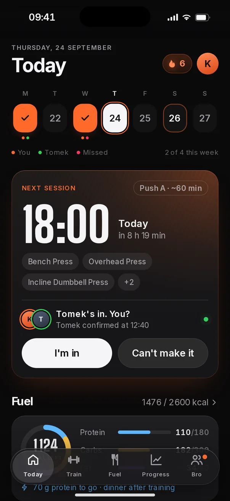
The e1RM chart with PR markers and range chips, a sparkline for every lift, weekly volume bars, a body-weight trend drawn through raw weigh-ins, and a muscle map built from the muscle_model.json the app already ships.
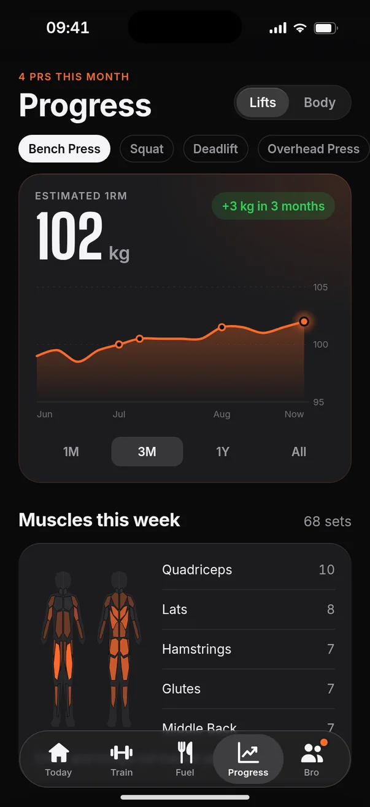
Two avatars and a one-tap answer on Today. Both of you in the week strip. His check-in at the top of your workout. The Bro tab turns into a scoreboard: sessions together, a You/Tomek week grid and a friendly head-to-head.
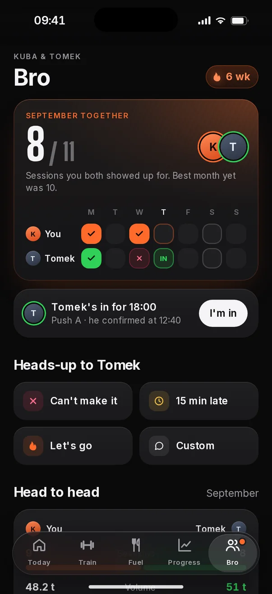
Ember means you, progress and records. Green means your partner and “confirmed”. Red only ever means “missed”. Protein, carbs and fat get their own hues, so the kcal ring can show what the calories are made of without borrowing ember.
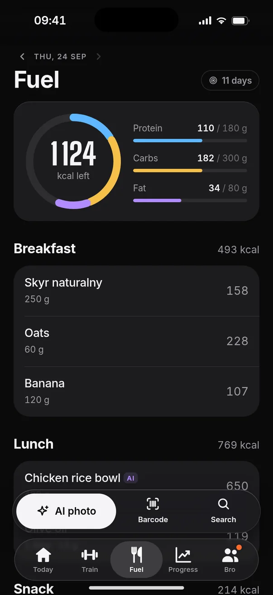
An empty dinner becomes “Post-workout dinner: aim for 70 g protein”. A blank muscle map says “Chest and triceps haven't been hit this week, Push A tonight fixes that.” Every gap on screen points at the next thing to do.
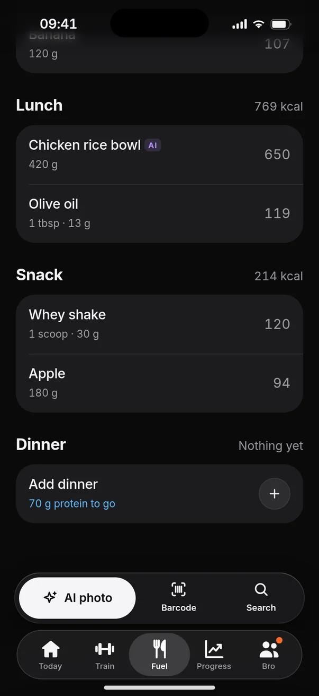
A rail showing where you are in the session, the current set highlighted, 44 pt ticks, plate math under the bar, a progressive-overload suggestion with Undo, and the rest timer pinned at thumb height with −15 / +15 / Skip.
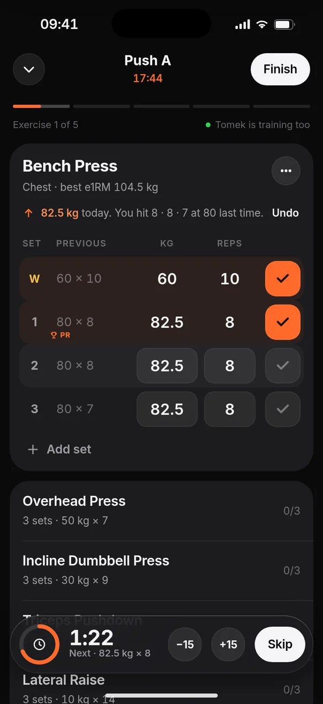
Ticks pop, rings and bars fill when a tab appears, the tab pill springs, and beating a record fires a PR toast with sparks the moment you tick the set, not after the workout. All of it respects Reduce Motion.
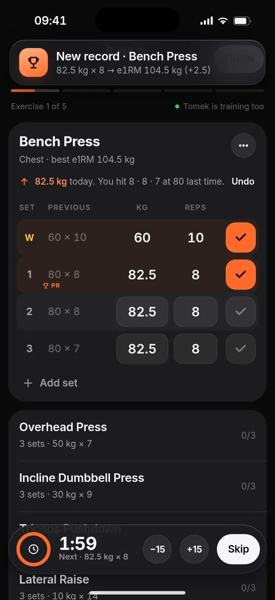
Same screens, same features. Left is the shipped iOS build, right is the prototype.
Additive. Existing NT.Colors, fonts and radii keep their names; v2 adds three macro hues, a lighter surface step and three surface styles. Android picks up the same values in its designsystem module.
Every hue has one job. Values not marked “new” already exist in Theme.swift.
The existing heat ramp now also drives the muscle map (sets per muscle) and the week strip on Fuel.
Big Shoulders moves from “hero numbers only” to “every number worth celebrating”.
Three levels. Only one hero per screen.
A sketch of the SwiftUI side. Compose mirrors it in designsystem/.
enum Colors { // …existing tokens unchanged… static let surfaceHi = Color(hex: 0x1F1F22) static let rim = Color.white.opacity(0.09) // Macro hues. Ember stays "you + progress". static let protein = Color(hex: 0x5EB8FF) static let carbs = Color(hex: 0xF5C04A) static let fat = Color(hex: 0xB18CFF) }
/// One per screen: the thing the user came to do. struct HeroCard<Content: View>: View { @ViewBuilder var content: () -> Content private let shape = RoundedRectangle( cornerRadius: NT.Radius.card, style: .continuous) var body: some View { content() .padding(NT.Spacing.cardPadding) .frame(maxWidth: .infinity, alignment: .leading) .background { RadialGradient( colors: [NT.Colors.ember.opacity(0.3), .clear], center: .topTrailing, startRadius: 0, endRadius: 320) .background(NT.Colors.surface) } .clipShape(shape) .overlay(shape.strokeBorder( NT.Colors.ember.opacity(0.16))) } }
Ordered so every phase lands on its own and improves the app before the next one starts. Both apps move together, as they do today.
surfaceHi, rim lightHeroCard, glass accessory bar